Bosses
Each attack below is written as the game's own attack card has it: what you see, then what to do. The numbers are from the game's data.
The main road
The Lodestone Scarab
Bars the way in sector 1, Briarstorm Cloister. Health 760. Stages: The Shell Cracks → Its Furnace Laid Bare.
| Attack | What you see and what to do |
|---|---|
| Roll | It scrapes the floor, curls into a boulder and rolls straight to the wall. Dash across its line, then hit its underside. |
| Stones | Three stones are pulled to it, then kicked along three paths. Stand between two paths. |
| Shockwave | It braces, then a ground ring spreads with a broad opening to one side of you. Move into the opening. |
The Thorn Reliquary
Guardian of sector 1, Briarstorm Cloister. Health 940. Stages: The Heartwood Splits → Thorns Without End.
| Attack | What you see and what to do |
|---|---|
| Vine Lash | An arm draws back and a line marks where it will lash. Leave the line before the strike. |
| Root Crawl | A root pod drops and crawls after you while the body fights on. Keep ahead of it; it climbs home soon. |
| Root Eruption | Marked bursts run from under it toward you in a chain. Step aside from the chain's line. |
| Petal Bloom | The heart opens and spins out petal spirals. Circle with the spin and slip between the arms. |
| Hound Call | Thorn hounds rush you. Shoot them down or dash through a lunge. |
| Seekers | Bright shots curve after you for two seconds, then fizzle. Keep flying in one wide arc and they run out. |
The Last Lamplighter
Guardian of sector 2, Drowned Scriptorium. Health 1050. Stages: Every Flame Burns Blue → He Is the Last Light.
| Attack | What you see and what to do |
|---|---|
| Snuff | He reaches his pole to a lit lamp and puts it out; wax sprays from it into the room. Stand off the lamp's side. |
| Hook | He draws the pole back, then sweeps an arc of shots where you were; a second arc follows later. Slip through a gap. |
| Flare | He lifts his lantern and every lit lamp bursts a ring of wax. Fewer lamps lit, fewer rings. |
| Lamp Beam | A lamp's beam is marked across the room, then burns. Step out of the mark. |
| Ember Moths | Ember moths curve after you for a moment, then burn out. Keep flying in one wide arc. |
The Bronze Watchman
Guardian of sector 3, Hollow Belfry. Health 1000. Stages: The Quarters Strike → Eleven Fifty-Nine.
| Attack | What you see and what to do |
|---|---|
| The Clock's Hands | The clock's hands turn over the floor and hurt to touch. Stay clear of the minute hand's sweep, or dash across it. |
| Watchman's Call | Its lantern flares, then bolts come at you in the chime's rhythm. Keep moving across them; late on, some lead you. |
| The Hour | Its hammer rises and the Hour Bell sends walls of sound down the room. Find each wall's gap, or dash through it. |
| Escapement | Its chest dial spins out arms of cogs that move and stop together. Slip between them while they stand still. |
| Hammer | Close by, it raises its hammer and sweeps the arc in front of it, marked first. Back off or get behind it. |
| Pendulum | The great pendulum drops at one side and swings across the room. Its bob and rod hurt: stay below or away. |
| Eleven Fifty-Nine | It turns its key: the minute hand races, then walls of sound with no gap. Leave the hand's circle; dash each wall. |
The Corrupted Robo
Guardian of sector 4, Frostveil Transit. Health 720. Stages: Its Plating Falls Away → The Core Runs Wild.
| Attack | What you see and what to do |
|---|---|
| Arm Throw | The throwing arm pulls back and glows, then flies out and bursts shards. Sidestep the throw, then the shards. |
| Rivet Fan | The chest glows, then a fan of rivets, twice. Slip between two rivets. |
| Stomp Ring | The body lifts, then slams: a ring with one gap. Fly through the gap. |
| Hound Call | The antenna flashes and hounds arrive. Shoot them down or dash through a lunge. |
| Seekers | Bright shots curve after you for two seconds, then fizzle. Keep flying in one wide arc and they run out. |
The Candle Parliament
Guardian of sector 5, Cinderheart Foundry. Health 880. Stages: The Wax Runs Red → One Flame for All.
| Attack | What you see and what to do |
|---|---|
| Crescent Vote | The crescent faces you and spaced moths release one sparse fan. Slip between the flames. |
| Procession | Two columns form either side of where you were and fire along themselves. Keep to the lane between them. |
| Unanimous Charge | A spear forms far from you and its route through you is marked. Leave the route before the pass. |
| Scattered Debate | Groups of four fly to their points and pause; one in each fires a small fan at once. Slip between them. |
The Griefwell
Guardian of sector 6, Fracture Observatory. Health 880. Stages: Grief Overflows → The Well Has No Floor.
| Attack | What you see and what to do |
|---|---|
| Inhale | Motes appear in a ring and curve inward to orbit the core. Keep clear of their arcs while they fall in. |
| Exhale | The held motes facing you dissolve: a sure opening. Hold it; the rest fly outward. |
| Orbit Pair | Two satellites rise and make one orbit, shedding pellets later on. Stay off the orbit's circle. |
| Translation | It marks a station and darts there, harmless. Watch its black holes: they pull, and their cores hurt. |
The Sepulchre King
Guardian of sector 7, Verdant Reliquary. Health 910. Stages: The Crown Burns Cold → The King Will Not Kneel.
| Attack | What you see and what to do |
|---|---|
| Arm Launch | An arm pulls back and flies to where you were, landing with a gilded ring. Move at the pull-back and pass the ring's gap. |
| Blade Sweep | Three arcs are marked in turn and cut in that order. Stand in the arc already cut. |
| Leg Charge | A leg hovers off and charges you, re-aiming between charges. Dash across its path, not away from it. |
| Vault Burst | The chest vault opens and fires a fan, twice. Slip between two shots; stay close to the gap. |
| Hound Call | Royal hounds chase and lunge. Shoot them down or dash through a lunge. |
| Seekers | Bright shots curve after you for two seconds, then fizzle. Keep flying in one wide arc and they run out. |
The Pale Interceptor
Guardian of sector 8, Stormbreak Causeway. Health 760. Stages: Throttle Unbound → Engines Screaming.
| Attack | What you see and what to do |
|---|---|
| Lead Burst | It locks a point ahead of your course and fires a burst there. Change course or stop as it locks. |
| Attack Run | Its whole route is marked edge to edge, then one fast pass. Leave the marked route. |
| Flanking Arc | It flies an arc round one corner, then fires a wide fan. Slip between the fan's shots. |
| Brake Counter | It brakes hard and sits exposed, then one precise shot. Move as it fires; hit it while it sits. |
The Iron Pilgrim
Guardian of sector 9, Resonant Quarry. Health 860. Stages: Full Steam → The Furnace Bursts.
| Attack | What you see and what to do |
|---|---|
| Charge | The train stops and the route ahead is marked, then the engine runs it. Leave the marked stretch. |
| Mortar | Three landing circles are marked, one on you. Leave the circles before the shells fall. |
| Whistle | Sound rings spread with wide openings, the first facing you. Take an opening; each ring's openings shift. |
| Last Charge | The short engine marks a long charge and brakes to a stop. Leave the mark, then punish the stop. |
The Last Organ
Guardian of sector 10, Eclipse Basilica. Health 960. Stages: The Shutters Open → The Final Hymn.
| Attack | What you see and what to do |
|---|---|
| Bass Procession | The bass pipes charge, then slow waves roll down the hall, each with one opening. Find the opening and move with it. |
| Treble Needles | Treble pipes flash one by one and each lights a floor column. The needles fall in that same order: leave the lit columns. |
| Fugue | Three floor lanes light one after another, starting with yours. The other three lanes always stay safe: move to one. |
| Bellows Exhale | The bellows swell, then one broad fan with three clear openings, one toward you. Hold an opening. |
Hidden bosses
Show the 30 hidden bosses
The Eclipse Archon
Beyond the last Guardian, in Eclipse Basilica. Health 1800. Stages: The Vessel Breaks → A Choir of One.
| Attack | What you see and what to do |
|---|---|
| Memory Spear | A ring stops and three fragments stretch into a spear; a line locks where you were. Move sideways once it locks. |
| Crescent Divide | Two arcs of pellets close in from the side walls and stop short of a broad middle opening. Sit in the opening. |
| Broken Halo | Six large slow stones ring the body with one broad safe sector, never simply where you are. Find the gap and stay in it. |
| Processional Rail | The beast compresses in place, then races once on a curved run through where you were. Keep moving when it coils. |
| Reliquary Roll | Its plates fold into a wheel, then it rolls straight once to the wall and uncurls with its Core open. Step aside as it curls. |
| Procession Arms | Two arms leave for your flanks and each sweeps once from where it lands. Shoot an arm to break it for the stage. |
| Twin Berth Collapse | Two broad side lanes light with a safe channel between; they slam one after the other. Hold the middle channel. |
| Choir Wingbeat | Moth flames light along the wings; two pressure waves roll out with a large central opening. Fly into the opening. |
| Glass Division | The body splits into three lobes; one brightens and surges in a straight line, three times. Watch the bright one. |
| Parliament Spear | Twelve moths flare and pack into an arrowhead that dives once and returns. Sidestep as they pack; the body is open. |
| Undertow Rise | It dives and a shadow swims below; a marked circle fills, it breaches, and a ring follows with a wide gap. Leave the circle. |
| Written Fugue | Three routes are drawn, A, B, C, then fire in that order. Your spot is never on all three; move as each clears. |
| Pipe Counterpoint | Two of three pipe banks light; the dark one marks the broad safe region. Go to the dark side before they fire. |
| Borrowed Phrase | A route it already played is drawn again, then fires backwards after a full warning. Leave the old route. |
| Footnote of the Past | A box marks where you were a second ago, then a chord strikes it once. Do not drift back into the box. |
| Open Core | The Core brightens between attacks. Turn toward it: hits there do more. |
| Long Opening | After its last sequence the Core stays open longer. Spend everything on it. |
| Eclipse Intercept | It brightens in place, then makes one fast pass aimed ahead of your course with a three-shot burst. Change course as it brightens. |
| Griefwell Slingshot | Four slow shots bend once round the Core, stop, show their outward lines, then leave along them. Stand off the lines. |
| Severed Wing | A wing detaches to a marked flank and fires one shallow fan. Stay out of the fan; shooting the wing counts. |
| Black-Star Exhale | Motes gather toward the Core and hold while their outward lines show, then leave with broad openings. Pick an opening early. |
| Choir Fan | Six moth lights fan out toward you during its recovery. Slip between two lights. |
| Return Wave | The last route is drawn again and fires in reverse. Leave the route before it lights. |
| Declaration: Rail, Choir, Hour | Three sigils name the next three attacks in order: a rail run, a moth fan, a reversed route. |
| Declaration: Organ, Star, Intercept | Three sigils name the next three: pipe banks, the black-star shots, then one intercept pass. |
| Declaration: Glass, Atlas, Arm | Three sigils name the next three: the glass lobes, a written route, one arm's sweep. |
| Declaration: Scarab, Halo, Spear | Three sigils name the next three: a roll, the broken halo, the memory spear. |
| The Last Canticle | Below its last seal: Choir, Hour, Eclipse. A wave with a wide opening, its reverse, one intercept, then the Core opens wide. |
| Canticle Wave | One large pressure wave crosses with a wide opening. Fly into the opening. |
| Canticle Return | The same wave comes back the other way through the same opening. Hold the opening. |
| The Core Laid Bare | It brakes at the centre and opens its Core completely. The longest opening of the fight. |
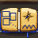
The Unwritten Atlas
Hidden in sector 2, Drowned Scriptorium. Health 1100. Stages: The Ink Runs Wild → The Clasp Breaks.
| Attack | What you see and what to do |
|---|---|
| Brushstroke | A faint ink route curves through where you are; pellets follow it in a line. Leave the line. |
| Stamp | A rectangle is stamped where you were a moment ago. Keep moving and it misses. |
| Gliders | Paper gliders fold, each already pointing its way, and make one straight pass. Step out of their lines. |
| Reposition | The cover shuts and it glides elsewhere, harmless. Hit it once it reopens. |
| Two Drawings | A brushed route fires, then a stamp lands where you were. Leave the line, then keep moving. |
The Borrowed Minute
Hidden in sector 3, Hollow Belfry. Health 1050. Stages: Time Fractures → The Last Grains Fall.
| Attack | What you see and what to do |
|---|---|
| Row | A sparse row of slow grains crosses the room; later the same route returns faintly in reverse. Pass between the grains. |
| Sandfall | Sand columns light one after another in order; a repeat replays them backwards. Stand in a column already fallen. |
| Turn | It turns over and moves to a new hover point, untouchable while turning. Reposition and wait. |
| Pause | A long exposed pause. Pour damage into the chambers or the neck. |
The Glass Tide
Hidden in sector 5, Cinderheart Foundry. Health 900. Stages: The Tide Divides → A Sea of Shards.
| Attack | What you see and what to do |
|---|---|
| Surge | One body gathers itself and leans briefly, then surges to the wall, leaving puddles. Dash across its line and avoid the rings. |
| Dome | A body swells into a dome, then releases a sparse fan of droplets near you. Slip between the droplets. |
| Split | At a stage break the liquid flows together and divides into smaller bodies, harmless while it does. Spread your fire. |
The Vesper Wyrm
Hidden in sector 9, Resonant Quarry. Health 1050. Stages: It Takes to the Sky → The Nave Burns.
| Attack | What you see and what to do |
|---|---|
| Sweeping Breath | It rears back, throat glowing, then sweeps a stream of fire across the nave. Put a pillar between you, or slip behind the stream. |
| Claw Rake | Too close in front, it lifts a foreleg: three marked arcs cut in turn. Back off or dash through the one already spent. |
| Tail Lash | Behind it, the tail curls: a wide marked arc, then a ring of bone shards from the tip. Find the gap in the ring. |
| Ember Spit | Fireballs arc at and around you; each marked circle bursts into embers and burns a while. Leave the circles. |
| Brood Call | Ashen whelps answer its call. They circle you, glow before they spit and bite on touch. Thin them fast. |
| Take Wing | Its wings spread and it climbs: high above, its body cannot touch you, but its fire still can. |
| Strafing Pass | It leaves the room, then sweeps across it low and fast, burning patches behind it. Step off the marked patches. |
| Fire Rain | Circling above, it drops fireballs near you and across the nave. Keep moving between the marked circles. |
| Dive | It hovers, flashing red, then falls on where you were and rings out fire. Move as it flashes. |
| Inferno | Its jaws loose three streams of fire that turn round the room. Run with the gap, or shelter behind a pillar. |
The Ossuary Widow
Hidden in sector 7, Verdant Reliquary. Health 980. Stages: The Brood Wakes → The Last Thread.
| Attack | What you see and what to do |
|---|---|
| Web Shot | She rears and throws balls of web at and around you. Each marked circle becomes a web on the floor that slows you; a dash tears free. |
| Silk Fan | Her spinnerets fan silk threads at where you were. Slip between the threads. |
| Fang Lunge | Too close, she flashes red and lunges: the bite's arc is marked where she stops. Get out of the arc. |
| Brood | She lays egg sacs that hatch into spiderlings. They dart at you in zigzags and bite. Keep away from the sacs and thin the brood fast. |
| Ceiling Drop | She climbs her thread out of reach, then hangs over you flashing red and drops, ringing out silk. Move as she flashes. |
| Web Cage | Strands are marked from her to the walls, then cut. Find the gap in the cage. |
The Drowned Reflection
Hidden in sector 8, Stormbreak Causeway. Health 900. Stages: The Mirror Cracks → It Looks Back.
| Attack | What you see and what to do |
|---|---|
| Ripple | It flies where you flew a moment ago, mirrored, and echoes your gun down your old lines. It also rings the water with gapped rings. |
| Grasping Hands | Hands rise from the water where you were a moment ago. Each circle is marked; keep moving somewhere new. |
| Undertow | Drowned bearers rise from dark puddles and wade at you. Thin them before they reach you. |
| Storm | The beacons gather the storm: marked chains between them strike, and so does the water round the reflection. Leave the marked lines. |
| Break the Surface | Close by, it stops mirroring, flashes red and lunges: the strike's arc is marked where it stops. |
| Look Back | Its eyes burn white: for a while it follows you almost at once and its echoes come fast. Keep your lines short and turning. |
The Undertow Queen
Hidden in sector 2, Drowned Scriptorium. Health 1050. Stages: The Tide Turns → The Queen Rises Ragged.
| Attack | What you see and what to do |
|---|---|
| Wingbeat | Pressure waves spread off both wings with an opening toward you and one behind. Hold the opening. |
| Pearl Fan | A sparse fan of pearls from the mouth, in volleys. Slip between two pearls each time. |
| Pearl Ring | Pearls ring the body, then a second ring turned half a step. Pass each ring through its gap. |
| Breach | It sinks and its shadow swims to where you were; the zone is marked. Leave the mark before it breaches. |
The Corrupted Raven
Hidden in sector 3, Hollow Belfry. Health 800. Stages: The Storm Answers → Lightning in Its Bones.
| Attack | What you see and what to do |
|---|---|
| Feather Ring | Feathers spin round it, then spiral outward. Stay out of the ring's reach and slip between the spiral's arms. |
| Feather Fan | One wing flares lit and fans feathers, then the other wing. Dodge once, then once more. |
| Lightning Call | Strike marks appear, one on you. Step off every mark before the lightning lands. |
| Dive | Its wings fold back, then it swoops to where you were. Move at the fold; its body hurts on touch. |
| Seekers | Bright shots curve after you for two seconds, then fizzle. Keep flying in one wide arc and they run out. |
The Rook Mother
Hidden in sector 3, Hollow Belfry. Health 800. Stages: The Bells Toll for You → She Sheds Her Black.
| Attack | What you see and what to do |
|---|---|
| Toll | She beats her wings at a bell and it sends a ring of shots out with one gap. Meet the gap. |
| Dive | Her body flares, then she dives straight through where you were and sheds a fan of feathers. Keep moving. |
| Moult | She shakes her plumage and feathers fall in columns from the top, with one wide empty lane. Find the lane. |
| Homing Feathers | Her ruff of bells rings and feathers curve after you, then fall. Keep flying in one wide arc. |
The Briar Hart
Hidden in sector 1, Briarstorm Cloister. Health 900. Stages: Storm in the Crown → The Burning Rut.
| Attack | What you see and what to do |
|---|---|
| Thorn Spears | It lowers its crown and flings a fan of thorn spears at you. They fly to the walls and stick there. Slip between them. |
| Splitting Spears | Every spear stuck in a wall splits into a half ring of thorns thrown back into the room. Stand away from the walls they stand in. |
| Charge | It paws the ground, flashing red, then runs at where you were until it hits a wall, briar growing where it ran. Move as it flashes. |
| Stamp | It rears and stamps: a ring of thorns with one gap, and briar springing up round it. Find the gap. |
| Crown of Storms | Its antlers call lightning onto marked circles near you, one after another. Keep moving out of each circle. |
| Antler Whirl | Too close, it spins: the ring its antlers sweep is marked. Get out of the ring (later it throws thorns as it spins). |
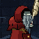
The Inkwell Abbot
Hidden in sector 2, Drowned Scriptorium. Health 960. Stages: The Ink Rises → Unwritten.
| Attack | What you see and what to do |
|---|---|
| Sigils | He writes sigils on the floor near you, each numbered in order. Nothing hurts yet: watch the numbers. |
| Recitation | He reads his sigils back in their order: each bursts into a ring of ink. Leave each one before its turn. |
| Blot | A lane right across the room through you is marked while ink seeps in from its ends, then floods. Leave the lane. |
| Quill Flick | His quill flicks fans of ink at you, two or three times. Later he aims where you are going. Slip between the drops. |
| Inkpots | His inkpots wheel round him and spit at you, again and again. Keep moving across their aim. |
| Erase | He sinks into his own ink and rises somewhere else. Later he leaves a ring of ink where he sank. Keep clear as he sinks. |
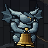
The Carillon Twins
Hidden in sector 1, Briarstorm Cloister. Health 1000. Stages: Out of Tune → The Last Change.
| Attack | What you see and what to do |
|---|---|
| Peal | They ring by turns: a ring of notes with one gap from each in turn. Find each ring's gap. |
| Chime | Both fling a fan of chimes at you from their two sides. Slip between the fans. |
| Toll | Each marks a lane down the room from where it stands, then strikes it. Leave both lanes. |
| Skipping Rope | They pull their rope taut and swing it round between them. The hot rope hurts: cross it as it passes, or dash. |
| Changeover | They spring across the room past each other, the rope taut between them. Keep clear of the line between them. |
| Harmony | Both ring together: two rings of notes crossing. Find where the rings leave room. |
The Rime Conductor
Hidden in sector 4, Frostveil Transit. Health 1040. Stages: Frost on the Glass → Terminus.
| Attack | What you see and what to do |
|---|---|
| Whistle | He sprays a fan of ice that stops dead and hangs in the air. Frozen shards still hurt: thread between them. |
| Frost Ring | A ring of flakes with one gap spreads out and freezes round him. Leave through the gap. |
| Thaw | Every frozen shard flies again: outward from him, later at you. Watch the hanging ice, not just him. |
| Signal Lamp | His lantern marks a lane across the room and a ghost train runs down it. Leave the lane. |
| Ticket Punch | Three marked holes punched round you, one after another. Step off each mark. |
| Departure | He boards a phantom carriage and runs straight across the room, leaving ice along the track. Clear his line. |
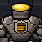
The Crucible Golem
Hidden in sector 5, Cinderheart Foundry. Health 1100. Stages: White Heat → Meltdown.
| Attack | What you see and what to do |
|---|---|
| Pour | Its ladle marks a channel across the room, then molten metal runs down it and burns a while. Stay off the channel. |
| Slag | Globs of slag lobbed onto marked spots near you; each bursts into a small ring. Leave the marks, then slip the ring. |
| Bellows | Its chest grate opens and blows a short cone of sparks. Back off: they die out within reach. |
| Forge Hammer | Near you it marks a slam at its fist and sends out a shockwave ring with a gap. Leave the mark, then find the gap. |
| Casting | Three molds marked round you fill with metal, then set and fire shards out of each. Leave the molds. |
| Vent | At full heat it bursts steam with a gap, then stands cracked open, cooling: hit it hard while it does. |
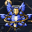
The Orrery Seraph
Hidden in sector 6, Fracture Observatory. Health 1080. Stages: Precession → Collapse.
| Attack | What you see and what to do |
|---|---|
| Solar Flare | Its star throws a ring of light with gaps. Find a gap. |
| Syzygy | Its planets slide into a line pointing at you, the line marked through the room; then a beam runs down it. Leave the line. |
| Swelling Orbits | Its rings widen across the room and back, the planets sweeping with them. Slip between the planets. |
| Comet | A great slow comet thrown at where you are going, shedding debris either side of its path. Step aside early. |
| Lens | Its lens marks a beam at one edge of an arc, then sweeps it across. Get behind where it starts or beyond where it ends. |
| Nova | Every planet bursts into a ring of shards and re-forms. Keep away from the planets. |
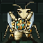
The Reliquary Mantis
Hidden in sector 7, Verdant Reliquary. Health 1120. Stages: Overgrown → Seed Time.
| Attack | What you see and what to do |
|---|---|
| Sow | Seeds flung onto marked spots root and grow into blooms that pulse rings of pollen. Keep off the blooms. |
| Harvest | Every open bloom fires a thorn at you at once and withers. Move across their lines. |
| Scythe | Marked arcs before it, slashed one after another. Step out of each arc as it comes. |
| Leap | It springs straight at you and lands with a ring of thorns. Move off its line, then slip the ring. |
| Spores | A slow spiral of spores turning out from it. Circle with the spiral's gaps. |
| Bloomstorm | A ring of blooms sown round you at once. Leave the ring before they open. |
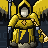
The Tempest Herald
Hidden in sector 8, Stormbreak Causeway. Health 1140. Stages: Squall Line → The Eye.
| Attack | What you see and what to do |
|---|---|
| Fanfare | A trumpet fan of notes that curve with the wind. Move against the curve. |
| Gust | A band across the room is marked, then a gale blows down it, pushing you and sweeping shots along. Fly across it or wait it out. |
| Lightning Rods | Rods driven into marked spots round you, then bolts leap rod to rod in turn. Stand off the chain. |
| Thunder | A ring of thunder with gaps. Find a gap. |
| Squall | Rows of slanted rain from the upwind wall, each with a gap. Read the gap in each row. |
| The Eye | It draws you toward it while a spiral turns out of it. Fly outward and slip the spiral. |
The Geode Matriarch
Hidden in sector 9, Resonant Quarry. Health 1180. Stages: Fault Line → Hollow Choir.
| Attack | What you see and what to do |
|---|---|
| Raise | Crystal spires erupt from marked spots near you and stay. They hurt to touch. |
| Resonance | Each spire links to its nearest sister by a marked line, then the line rings. Stand off the lines. |
| Fault | A crack runs from it toward you, erupting spot by spot. Step aside from its path. |
| Shatter | Every spire bursts into a ring of shards. Keep clear of the spires. |
| Rockfall | Stones fall on marked spots round you, spraying as they land. Leave the marks. |
| Chorus | Every spire fires a shard at you in turn. Keep moving across their lines. |
The Umbral Thurifer
Hidden in sector 10, Eclipse Basilica. Health 1220. Stages: Penumbra → Totality.
| Attack | What you see and what to do |
|---|---|
| Swing | Its censer whirls once round it on its chain. Keep outside the ring it marks, or pass behind the chain. |
| Double Swing | Two censers whirl at once, turning opposite ways. Find the gap as they pass. |
| Incense | Slow smoke drifts out and hangs, then bursts into embers. Leave the puffs before they burst. |
| Eclipse | A band of shadow crosses the room wall to wall with one lit gap. Stand in the gap as it passes. |
| Totality | Two bands cross the room at right angles. Meet both gaps. |
| Litany | Candles light in a ring round it and fire at you one after another. Keep moving. |
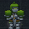
The Hedge Warden
Hidden in sector 1, Briarstorm Cloister. Health 960. Stages: Overgrown → Wildwood.
| Attack | What you see and what to do |
|---|---|
| Hedge | Rows of yew grow across the room, each with one gap, and stand a while. Find the gaps and keep off the yew. |
| Snip | Its shears open toward you, then close. Leave the space between the blades before they shut. |
| Clippings | A fan of leaves, some slow and some quick. Slip through the fan's gaps. |
| Topiary | Every standing hedge is clipped at once and sheds leaves from both its sides. Stand between the falling lines. |
| Prune | Its shears are flung spinning to the wall and come back, shedding thorns. Keep off their lane. |
The Compline Owl
Hidden in sector 1, Briarstorm Cloister. Health 980. Stages: Moult → The Long Night.
| Attack | What you see and what to do |
|---|---|
| Gaze | A cone of its stare sweeps across the room. Get behind it or out of its reach. |
| Vigil | Three cones of its stare turn round it. Move with the gaps between them. |
| Stoop | It dives at where you were and lands in a ring of feathers. Move off, then find the ring's gap. |
| Feathers | Feathers fly out, stop and hang, then all dart at you at once. Keep moving when they turn. |
| Hoot | A ring of sound spreads across the room with one gap. Meet it at the gap. |
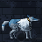
The Sleet Hound
Hidden in sector 4, Frostveil Transit. Health 1060. Stages: Rime Coat → Whiteout.
| Attack | What you see and what to do |
|---|---|
| Bound | It leaps at where you were and lands in a ring of ice. Move off, then find the ring's gap. |
| Frenzy | Three bounds one after the other, each landing in a ring. Keep moving. |
| Breath | A cone of frost breath leaves rime on the floor that keeps hurting. Leave the cone and keep off the rime. |
| Howl | A spiral of sleet turns out of it. Move with the spiral's gaps. |
| Circle | It runs a lap round you, dropping shards that then fall inward. Get out of the ring before they fall. |
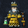
The Pointsman
Hidden in sector 4, Frostveil Transit. Health 1060. Stages: Black Ice → Last Train.
| Attack | What you see and what to do |
|---|---|
| Lay | Rails are laid across the room. Cold rails are harmless. |
| Switch | Half the rails go live, each lit along its length first; the other half next time. Stand between the live ones. |
| Derail | Every rail goes live but one. Find the rail that stays cold, or the floor between. |
| Signal | His lamp swings and three narrow volleys follow you. Keep moving across their line. |
| Trolley | A hand-cart runs the length of one rail, throwing sparks off both sides. Keep off its rail. |
The Furnace Moth
Hidden in sector 5, Cinderheart Foundry. Health 1100. Stages: Singed → Pyre Wings.
| Attack | What you see and what to do |
|---|---|
| Dust | A beat of its wings spreads a slow drift of ash. Weave through the motes. |
| Flutter | It zigzags to new places, dropping embers that hang, then fall away from its path. Keep clear of its trail. |
| Kindle | Vents near you flare one after another, each throwing a ring of sparks. Leave each marked vent before it flares. |
| Orbit | It circles a flare, shedding embers outward. Keep outside its circle, or slip inside. |
| Immolate | Its burning wings sweep two cones of flame round it. Move with the gaps. |
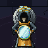
The Lens Grinder
Hidden in sector 6, Fracture Observatory. Health 1080. Stages: Cracked Lens → Burning Glass.
| Attack | What you see and what to do |
|---|---|
| Mirrors | Tall mirrors stand up round the room. They are harmless, but his beams bend off them. |
| Beam | A beam at you, its whole path lit first, bending off every mirror it meets. Leave every lit line. |
| Prism | The beam splits in three where it first meets a mirror. Watch all three lit lines. |
| Focus | Every mirror throws a beam at you at once. Find the space between the lit lines. |
| Shards | A fan of glass shards. Slip through the gaps. |
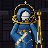
The Star Cartographer
Hidden in sector 10, Eclipse Basilica. Health 1080. Stages: Precession → Fallen Sky.
| Attack | What you see and what to do |
|---|---|
| Chart | Stars are set on the floor round you. Alone they are harmless. |
| Link | The stars are joined into a constellation, each line lit first. Leave the lines before they burn. |
| Wheel | The constellation is linked and turns about its middle. Move with the gaps between its lines. |
| Spokes | Every star is tied to him by a line of light. Stand between the spokes. |
| Nova | Every star bursts into a ring of light. Leave the stars before they burst. |
| Meteor | Meteors streak across the room down lit lanes, shedding debris. Keep off the lanes. |
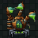
The Alembic Hydra
Hidden in sector 7, Verdant Reliquary. Health 1120. Stages: Boiling Over → Philosopher's Fire.
| Attack | What you see and what to do |
|---|---|
| Acid | Globs of acid land on marked spots and leave pools that keep burning. Leave each mark and keep off the pools. |
| Beads | Quicksilver beads that bounce off the walls. Watch where they come back from. |
| Jets | Steam jets from its three heads sweep round it. Move with the gaps between them. |
| Reflux | Every bead still flying rushes back toward it, and the pools spit. Keep off the line between them and it. |
| Overboil | Its retort boils over in rings, one after another. Slip through each ring's gaps. |
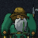
The Wrecker
Hidden in sector 8, Stormbreak Causeway. Health 1140. Stages: Foul Weather → Lost With All Hands.
| Attack | What you see and what to do |
|---|---|
| Lights | False lanterns are set round you. While they burn, his volleys bend toward the nearest. |
| Grapple | His hook is flung down a lit lane to the wall, then the chain hurts. Keep off its lane. |
| Barrels | Barrels roll out and bounce off the walls. Watch where they come back from. |
| Broadside | Ranks of shots march across the room from a wall, each with a gap. Meet each gap. |
| Shipwreck | Every lantern bursts into a ring at once. Leave the lanterns before they burst. |
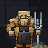
The Echo Mason
Hidden in sector 9, Resonant Quarry. Health 1180. Stages: Overtone → Shatterpoint.
| Attack | What you see and what to do |
|---|---|
| Chisel | A line struck out from him, lit first. Then it rings back, mirrored. |
| Ring | A ring of chips with one gap. Its echo turns the gap half round. |
| Tap | Spots near you crack. Their echo cracks the mirrored spots. |
| Resonate | His last strike sounds again, and echoes twice. Watch for the mirrored lines. |
| Chorus | A line, a ring and taps at once, and all of them echo. |
The Sexton
Hidden in sector 10, Eclipse Basilica. Health 1220. Stages: Vespers → Requiem.
| Attack | What you see and what to do |
|---|---|
| Dig | Graves marked near you open into pits that stay a while. Leave each marked plot and keep off the pits. |
| Shovel | His spade swept round him in an arc, marked first. Keep out of its reach. |
| Toll | Two rings of shots, the second turned half a step. Slip through each ring's gaps. |
| Risen | Every open grave throws bones at you. Move away from the open graves. |
| Procession | A row of graves opens one after another across the room, a gap left near you. Stay in the gap. |